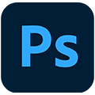
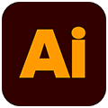

Web Design
Modern website layouts, landing pages, responsive interfaces and dashboard experiences designed around clarity and usability.
OPEN TO EXCITING OPPORTUNITIES
Hello, I'm Shiv Kumar
Web & Graphic Designer with 9+ years of experience turning ideas into thoughtful websites, engaging interfaces and memorable visual identities.

I’m a Web & Graphic Designer who enjoys bringing ideas to life through clean visuals, thoughtful layouts and intuitive digital experiences.
With over five years of experience, I work across website design, graphic design, UI/UX, brand identity and frontend implementation. I enjoy understanding a brief, exploring the right visual direction and turning it into work that looks distinctive and works smoothly.
My approach brings creativity and functionality together — because good design should not only look good, it should communicate clearly and solve a real need.
Modern website layouts, landing pages, responsive interfaces and dashboard experiences designed around clarity and usability.
Visual communication for brands, campaigns and businesses — from promotional creatives to polished marketing materials.
User-focused mobile and web interfaces, structured screens and clear journeys that make digital products easier to use.
Distinctive logo concepts and consistent visual systems that help businesses present themselves with confidence.

Photoshop
Illustrator Figma
Figma HTML-5
HTML-5 CSS-3
CSS-3 React
ReactDesign tools and frontend technologies — selected to support both visual craft and practical implementation.
Explore a selection of digital products, interfaces and visual identities. Each project reflects a different design challenge and creative direction.
A logistics-focused CRM experience with business dashboards, operational tools and financial reporting interfaces.
A recruitment platform experience connecting job seekers and employers.
A cleanliness reporting concept focused on accessible issue reporting and community action.
Branding and promotional design directions for transport, towing and repair businesses.
Digital product visuals and promotional design for a dispatch technology platform.
Creative digital assets and visual communication for dental practice technology.
Project previews are illustrative placeholders for layout purposes. Replace them with your original screenshots and final approved work before sharing this portfolio.
Clarify the brief, audience, goals and practical requirements.
Develop visual directions, structure and creative concepts.
Design, refine and prepare clear, consistent deliverables.
Collaborate, check details and support implementation.
Web & Graphic Designer
9+ YEARS OF PROFESSIONAL EXPERIENCE
Working across digital design and visual communication — creating websites, application interfaces, brand assets and marketing materials. Experienced in taking projects from initial ideas through design refinement and frontend collaboration.
Add your actual company names, employment dates and role-specific achievements here before publishing.
HAVE A ROLE OR PROJECT IN MIND?
I'm interested in connecting with teams who value thoughtful design, clear communication and creative problem-solving.
shivkumar19792@gmail.com ↗